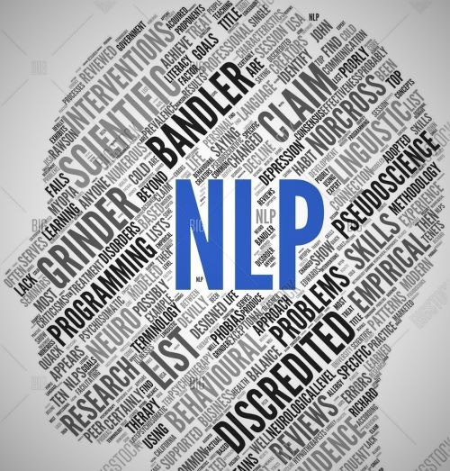

Books:
- Natural Language Processing with Python
- Natural Language Processing in Action
- Natural Language Processing with PyTorch
- Natural Language Processing Specialization
Research Papers:
- Teacher Forcing in Recurrent Neural Networks
- Exploring the Limits of Transfer Learning with a Unified Text to Text Transformer
- Deep Learning Based Text Classification: A Comprehensive Review
- The Illustrated Transformer
- NLP’s ImageNet Moment
- The Illustrated BERT, ELMO and Co.
- Generalized Language Models
- Efficient Estimation of Word Representations in Vector Space
- Distributed Representations of Words and Phrases and their Compositionality
- GloVe : Global Vectors for Word Representation
- A Simple Way to Initialize Recurrent Networks of Rectified Linear Units
- Neural Machine Translation By Jointly Learning To Align and Translate
- Dynamic Memory Networks for Natural Language Processing
- Dynamic Memory Networks for Natural Language Processing
- Recursive Deep Models for Semantic Compositionality Over a Sentiment Treebank
- Stanza: A Python Natural Language Processing Toolkit for Many Human Languages
- Learning Music Helps you Read: Using Transfer to Study Linguistic Structure in Language Models
- Improved Semantic Representations From Tree Structured Long Short Term Memory Networks
- The Stanford CoreNLP Natural Language Processing Toolkit
- Zero Shot Learning Through Cross Modal Transfer
- Assessing the Ability of LSTMs to Learn Syntax Sensitive Dependencies
- Finding Universal Grammatical Relations in Multilingual BERT
Notebooks:
- Topic Modeling with Singular Value Decomposition and Non negative Matrix Formation
- Sentiment Classification of Internet Movie Reviews Database Reviews
- Semantic Analysis with LDA, LSA and LDIA
- Sentiment Analysis of Large Movie Dataset using RNN, CNN and LSTM
- Text Generation using Long Short Term Memory or LSTM
- Chatbot with Sequence to Sequence Networks
- YELP Reviews Sentiment Analysis
- Amazon Reviews Analysis
- Surname Classification with Demographics
- Duplicate Questions Recognition using Trax
Day1 of 66DaysOfData! - Natural Language Processing: Natural Language Processing is a field of Linguistics, Computer Science, and Artificial Intelligence concerned with the interactions between Computers and Human language, in particular how to program computers to process and analyze large amounts of Natural Language Data. Today I am learning Natural Language Processing from very begining. I have read and Implemented the Fundamentals of Natural Language Processing. Here, I have provided the short description of various Libraries, Dependencies and Modules required for Natural Language Processing. I have also presented the Processing of Text such as Removing the Retweet Text, Removing the Hyperlinks and Removing Hashtags. I hope you will gain some insights and work on the same. I hope you will also spend some time learning the Topics mentioned above. Excited about the days ahead !! - Topics: - Fundamentals of Natural Language Processing

Day2 of 66DaysOfData! - String Tokenization: In Natural Language Processing, String Tokenization is a process where the string is splitted into Individual words or Individual parts without blanks and tabs. In the same step, the words in the String is converted into lower case. The Tokenize Module from NLTK or Naural Language Toolkit makes very easy to carry out this process. In my Journey of Natural Language Processing, Today I have learned about String Tokenization, Stop word and Punctuation in Natural Language Processing. I have implemented TweetTokenizer and presented the process to remove Stopwords and Punctuation from the Tokenized Tweets here in the Snapshot. I hope you will gain some insights and work on the same. I hope you will also spend some time learning the Topics mentioned above. Excited about the days ahead!! - Topics: - Fundamentals of Natural Language Processing

Day3 of 66DaysOfData! - Stemming in Natural Language Processing: Stemming is a process of converting a word to its most General form or Stem. It’s basically the process of removing the suffix from a word and reduce it to it’s root word. It helps in reducing the size of Vocabulary. In my Journey of Natural Language Processing, Today I learned about Stemming in Natural Language Processing which is one of the most important steps while working with Text. I have presented the Implementation of Porter Stemmer, Snowball Stemmer and Lancaster Stemmer here in the Snapshot. I hope you will gain some insights and work on the same. I hope you will also spend some time learning the Topics mentioned above. Excited for coming days!! - Porter Stemmer: It is one of the most common and gentle stemmer which is very fast but not very precise. - Snowball Stemmer: It’s actual name is English Stemmer is more precise over large Dataset. - Lancaster Stemmer: It is very aggressive algorithm. It will hugely trim down the working data which itself has pros and cons. - Topics: - Fundamentals of Natural Language Processing

Day4 of 66DaysOfData! - Lemmatization in Natural Language Processing: Lemmatization is the process of grouping together the inflected forms of words so that they can analysed as a single item, identified by the word’s Lemma or a Dictionary form. It is the process where individual tokens from a sentence or words are reduced to their base form. Lemmatization is much more informative than Simple Stemming. Lemmatization looks at the surrounding text to determine a given words’s part of speech where it doesn’t categorize the phrases. In my journey of Natural Language Processing, Today I learned about Lemmatization and it’s simple implementation using Spacy as well NLTK. I have covered the fundamentals of Natural Language Processing such as Tokenization, Stemming and Lemmatization. I hope you will gain some insights and work on the same. I hope you will also spend some time learning the Topics mentioned above. Excited for the days ahead!! - Topics: - Fundamentals of Natural Language Processing

Day5 of 66DaysOfData! - Natural Language Processing: Natural Language Processing is a field of Linguistics, Computer Science, and Artificial Intelligence concerned with the interactions between Computers and Human language, in particular how to program computers to process and analyze large amounts of Natural Language Data. As a part of Natural Langauge Processing Journey, I have started reading and Implementing from the Book Natural Language Processing with Python. It’s really amazing and I have encountered many basic functions which are unknown to me such as Concordance Function, Similar Function, Common Context Function and a basic Dispersion plot as well. I will be using this Book in my journey. I hope you will gain some insights and work on the same. I hope you will also spend some time learning the Topics from the Book mentioned above and below. Excited for the days ahead!! - Book: - Natural Language Processing with Python
Day6 of 66DaysOfData! - In my Journey of Natural Language Processing, Today I have explored about Gutenberg Corpus using NLTK and Python. I have also learned about various Interesting Challenges with proper explanation of each Topics under the hood of Natural Language Processing from the Book Natural Language Processing with Python. I hope you will gain some insights and work on the same. I hope you will also spend some time learning the Topics from the Book mentioned above and below. - Word Sense Disambiguation: In Natural Language Processing, Word Sense Disambiguation is an open problem concerned with identifying which sense of a word is used in a sentence. The solution to this issue impacts other Computer related writing such as discourse, improving relevance of Search Engines, Anaphora Resolution, Coherence, and Inference. - Pronounce Resolution - Generating Language Output - Machine Translation: Machine Translation is a sub field of Computational Linguistics that investigates the use of software to translate text or speech from one language to another. - Spoken Dialog System - Textual Entailment - Book: - Natural Language Processing with Python

Day7 of 66DaysOfData! - On my Journey of Natural Language Processing, Today I have learned about different Text Corpora and Basic Corpus Functionality defined in NLTK from the Book Natural Language Processing with Python . I have also learned about Loading own Corpus, Plotting and Tabulating Distributions and Generating Random Text with Bigrams here. I hope you will gain some insights and work on the same. I hope you will also spend some time learning the Topics from the Book mentioned above and below. The Topics I have covered are summarized below: - Web and Chat Text - Brown Corpus - Reuters Corpus - Inaugural Address Corpus - Annotated Text Corpora - Corpora in Other Languages - Conditional Frequency Distributions - Book: - Natural Language Processing with Python

Day8 of 66DaysOfData! - On my Journey of Natural Language Processing, Today I have learned about Processing Raw Text in Natural Language Processing. Basically, I have completed Processing the Text from Electronic Books and from HTML documents from the Book Natural Language Processing with Python. Apart from that, I have learned about WordNet. The topics I have covered in WordNet are: The WordNet Hierarchy and Semantic Similarity: Semantic Similarity is a metric defined over a set of Documents or Terms where the idea of distance between items is based on the likeness of their meaning or Semantic content as opposed to Lexicographical Similarity. Example:Road and Driving. I hope you will gain some insights and work on the same. I hope you will also spend some time learning the Topics from the Book mentioned above and below. Excited about the days ahead !! - Book: - Natural Language Processing with Python

Day9 of 66DaysOfData! - On my journey of Natural Language Processing, Today I have learned about Text Processing with Unicode and Regular Expressions for Detecting Word Patterns with proper explanations. Within a Program we can manipulate Unicode just like normal strings. Unicode are encoded as stream of bytes. Examples: ASCII, Latin-2, UTF-8. I have also Implemented the Regular Expressions for Detecting the Word Patterns using basic meta characters such as: - Dollar sign ( $ ) matches the characters of the end of word. - Dot symbol ( . ) matches any single character. - Caret symbol ( ^ ) matches the characters of the start of word. - Question mark ( ? ) specifies the previous character is optional. - Plus sign ( + ) means one or more instances of the preceding item. - Sign ( * ) means zero or more instances of the preceding item. - Backslash ( ) means following character is deprived. - Pipe symbol ( | ) specifies the choice between left and right. I hope you will gain some insights and work on the same. I hope you will also spend some time learning the Topics from the Book mentioned above and below. Excited about the days ahead !! - Book: - Natural Language Processing with Python

Day10 of 66DaysOfData! - In my journey of Natural Language Processing, Today I have learned about the various useful applications of Regular Expressions such as Finding Word Stems, Regular Expressions for Tokenizing Text, Normalizing Text such as Stemmers and Lemmatization. I have also read about the issues of Tokenization: Tokenization turns out to be far more difficult task than one might have expected. No single solution works well accross the board. Another issue of Tokenization is the presence of contractions as well such as in didn’t. I hope you will gain some insights and work on the same. I hope you will also spend some time learning the Topics from the Book mentioned below. Excited about the days ahead !! - Book: - Natural Language Processing with Python

Day11 of 66DaysOfData! - In my journey of Natural Language Processing, Today I have completed all the preliminaries process or techniques required in Natural Language Processing included in the Book Natural Language Processing with Python. I have completed the topics such as Tokenization, Stemming, Lemmatization and Text Processing with Regular Expressions from this Book. Apart from that, I have also worked with various Text Corpora such as Brown Corpus, Inaugural Address Corpus, Reuters Corpus and so on. And I have completed first 110 pages of the Book Natural Language Processing with Python. I have plotted a simple bar plot using various categories of Brown Corpus presenting the Frequency Distribution of various words appearing inside the Corpus. I hope you will gain some insights and work on the same. I hope you will also spend some time learning the Topics from the Book mentioned below. Excited about the days ahead !! - Book: - Natural Language Processing with Python


Day12 of 66DaysOfData! - Part of Speech Tagging: The process of classifying words into their Parts of Speech and Labeling them accordingly is known as Part of Speech Tagging which is also known as POS tagging or simply Tagging. The collections of tags used for a particular task is known as Tagset. In my Journey of Natural Language Processing, Today I have learned about Automatic Tagging such as Default Tagger, Regular Expression Tagger and Lookup Tagger along with N-Gram Tagging such as Unigram Tagger, Bigram Tagger and so on. I have also learned about Combining Taggers using backoff parameter. I hope you will gain some insights and work on the same. I hope you will also spend some time learning the Topics from the Book mentioned below. Excited about the days ahead !! - Book: - Natural Language Processing with Python

Day13 of 66DaysOfData! - Supervised Classification: Classification is the process of choosing the correct class label for a given input. The Classification is said to be Supervised Classification if it is built based on training corpora containing the correct label for each input. One common example of Classification is deciding whether an Email is spam or not. In my Journey of Natural Language Processing, Today I have learned about Supervised Classification. I have covered the topics such as Choosing Right Features, Document Classification, Gender Identification, Part of Speech Tagging using Naive Bayes Classifier and Decision Trees Classifier under the hood of Supervised Classification of Natural Language Processing. I have presented the basic Implementation of Naive Bayes Classifier in Document Classification. I hope you will gain some insights and work on the same. I hope you will also spend some time learning the Topics from the Book mentioned below. Excited about the days ahead!! - Book: - Natural Language Processing with Python

Day14 of 66DaysOfData! - In my journey of Natural Language Processing, Today I have learned about Sequence Classification, Sentence Segmentation and various Evaluation methods under the hood of Natural Language Processing. I have covered the Fundamental Topics such as Test Data, Accuracy measure, Precision and Recall, Confusion Matrices, Cross validation, Decision Trees and Naive Bayes with proper implementations which are so helpful for my understanding. I have been in this Journey for 2 weeks and I have covered all the fundamentals which are so relevant in Natural Language Processing. I have been following the Natural Language Processing with Python Book and it really helps me a lot. Now, I will be focusing more on Implementations so that I will be following the course of Fastai on Natural Language Processing. I have implemented the Naive Bayes Classifier in Text Corpus and I hope you can gain insight about the Implementation of Naive Bayes. I hope you will gain some insights and work on the same. I hope you will also spend some time learning the Topics from the Book mentioned below. Excited about the days ahead!! - Book: - Natural Language Processing with Python

Day15 of 66DaysOfData! - Singular Value Decomposition or SVD: The words that appear most frequently in one topic would appear less frequently in the other, otherwise that word wouldn’t make a good choice to separate out the two topics. Therefore, the Topics are Orthogonal. The SVD algorithm factorizes a matrix into one matrix with orthogonal columns and one with orthogonal rows along with diagonal matrix which contains the relative importance of each factor. - NonNegative Matrix Factorization or NMF: Non Negative Matrix Factorization (NMF) is a factorization or constrain of non negative dataset. NMF is non exact factorization that factors into one short positive matrix. - Topic Frequency Inverse Document Frequency or TFIDF: TFIDF is a way to normalize the term counts by taking into account how often they appear in a document and how long the document is and how common or rare the document is. - In my journey of Natural Language Processing, Today I have learned and Implemented about SVD, NMF and TFIDF in Topic Modeling Project. I have captured just the overview of the implementations here. I hope you will gain some insights and work on the same. I hope you will also spend some time learning the Topics from the Course mentioned below. Excited about the days ahead!! - Course: Fastai

Day16 of 66DaysOfData! - In my journey of Natural Language Processing, Today I have learned about Implementations of Natural Language Processing from Fastai course which has been published recently. As the Fastai course primarily focuses on the Coding part and follows the top down aspect of Learning and Teaching. It’s bit complicated to learn than other courses. Fastai’s API is really amazing and powerful as well. I learned the basic steps of Natural Language Processing with Fastai such as Word Tokenization, Subword Tokenization, Numericalization, and Preparing TextBlock and DataBlock. I am currently working on Sentiment Analysis of IMDB reviews using Fastai. I have shared the Implementations of the Word Tokenization, Subword Tokenization, Numericalization and process to prepare the TextBlock and DataBlock with Fastai here in the Snapshots. I hope you will gain some insights and work on the same. I hope you will also spend some time learning the Topics from the Course mentioned below. Excited about the days ahead!! - Course: Fastai - Sentiment Classification of Internet Movie Database reviews

Day17 of 66DaysOfData! - In my journey of Natural Language Processing, Today I have learned about the Implementation of Fastai in preparing a Sentiment Classifier Model. I have prepared a Model using Fastai API which can classify Sentiment of Internet Movie Database reviews i.e. classifying the Positive or Negative Sentiment. Fastai’s API is really powerful and effective so that the Model can classify the Sentiment of Internet Movie Database reviews with above 90% accuracy in just few lines of code. I have learned about Word Tokenization, Subword Tokenization, Numericalization, TextBlock and DataBlock API and Training the Classifier Model using Fastai.I have presented the snapshot of the Implementation of Fastai API in preparing the Language Model and Training the Model. I have also presented the Implementation of Fastai API in preparing the Classifier Model using the Language Model and also the concept of unfreezing the Model. I hope you will gain some insights and work on the same. I hope you will also spend some time learning the Topics from the Course mentioned below. Excited about the days ahead!! - Course: Fastai - Sentiment Classification of Internet Movie Database reviews

Day18 of 66DaysOfData! - In my journey of Natural Language Processing, Today I have read a Topic of Natural Language Processing in the Book Dive into Deep Learning by Aston Zhang. Here, I have covered the Topics such as Text Processing, Machine Translation, Natural Language Processing Pretraining and Word Embedding. The information and explanations were great and the code implementation is in MXNET. I am not quite familiar with MXNET framework so I have just presented a small Snapshot here. Apart from that, Today I have read a very small part of the book Natural Language Processing in Action by Hobson Lane. I am so much thankful to Anthony Camarillo for sharing this book with me. And I will give continuation with this Book Natural Language Processing in Action. I hope you will gain some insights and work on the same. I hope you will also spend some time learning the Topics from the Books mentioned below. Excited about the days ahead!! - Books: - Dive into Deep Learning - Natural Language Processing in Action

Day19 of 66DaysOfCode! - In my journey of Natural Language Processing, Today I have read and implemented the First chapter of the Book Natural Language Processing in Action. In this chapter, I have covered the Topics such as Natural Language Processing and the Magic, Regular Expressions, Finite State Machine or FSM concept, Word order and Grammar, simple NLP Chatbot Pipeline and Natural Language IQ. I have presented the simple Chatbot using Regular Expressions and Finite State Machine or FSM concept. Basically, I will be working on much advanced Chatbots using Neural Networks in coming days. I hope you will also google out the FSM concept in NLP and also the Implementation of Regular Expressions in FSM from here. I hope you will gain some insights and work on the same. I hope you will also spend some time learning the Topics from the Books mentioned below. Excited about the days ahead!! - Books: - Natural Language Processing in Action

Day20 of 66DaysOfData! - In my journey of Natural Language Processing, Today I have read a couple of topics under the hood of Natural Language Processing such as Tokenized Phrase, Dot Product in Natural Language Processing, Bag of Words and Overlapping, Token improvement with Regex which is apart from Regular Expressions, Contractions, Extending Vocabulary with NGrams. I have also read and implemented the Regex Tokenizer, Tree Bank Tokenizer and Casual Tokenizer. Actually I am continuing my learning Journey with a Book Natural Language Processing in Action and lots of the preprocessing concepts which I have already read are coming along my way. I prefer to go through the concepts again because I don’t want to skip any topics from this book. Although the concepts might match along the way I won’t repeat the same implementation in any of my Snapshots. I have presented the Implementation of Regex Tokenizer, Tree Bank Tokenizer, Casual Tokenizer and NGrams here in the Snapshots. These Tokenization steps are more better than Traditional Tokenization steps using Regular Expressions. I hope you will gain some insights and work on the same. I hope you will also spend some time learning the Topics from the Books mentioned below. Excited about the days ahead!! - Books: - Natural Language Processing in Action

Day21 of 66DaysOfData! - In my journey of Natural Language Processing, Today I have read and implemented about Stopwords, Stemming, Lemmatization and Sentiment Analysis using VADER Approach which is the Algorithm composed by human and also the Machine Learning Approach with the help of Naive Bayes Classifier. I have completed the first 2 chapters of the book, Natural Language Processing in Action and it is helping me a lot along my Journey. I have presented the Implementation of VADER Approach in Sentiment Analysis along with Naive Bayes Classifier and I have also included the Implementation of Casual Tokenizer in the Movies Dataset. I hope you will gain insights about the Implementation of VADER Approach and Naive Bayes in Sentiment Analysis. Actually, VADER Approach is not as efficient as Machine Learning Approach such as Naive Bayes Classifier. I hope you will spend some time in learning about Naive Bayes in Sentiment Analysis along with VADER Approach. I hope you will gain some insights and work on the same. I hope you will also spend some time learning the Topics from the Books mentioned below. Excited about the days to come!! - Book: - Natural Language Processing in Action

Day22 of 66DaysOfData! - In my journey of Natural Language Processing, Today I have read and Implemented about Bag of Words, Vectorizing concept, Vector Spaces, Cosine Similarity, Zipf’s Law and Inverse Frequency concept, Text Modeling, TFIDF, Relevance Ranking and Okapi BM25 concept. I have completed the first three chapters of the book Natural Language Processing in Action and this chapter primarily focuses on the concept of Vectorizing the Tokens which are obtained after Tokenization using TFIDF Vectorizer. Text Vectorization is the process of converting Text into Numerical representation. I have also read and Implemented the concept of Cosine Similarity under the hood of Natural Language Processing. I have presented the Implementation of TFIDF Vectorizer and also the process of Tokenizing the Text Documents and removing the Stopwords. I have also Implemented the Cosine Similarity using Numpy and pure Python as well in this Snapshot. I hope you will gain insights about Text Vectorization and Tokenization from here. I hope you will gain some insights and work on the same. I hope you will also spend some time learning the Topics from the Books mentioned below. Excited about the days to come!! - Book: - Natural Language Processing in Action

Day23 of 66DaysOfData! - In my journey of Natural Language Processing, Today I have started learning about Semantic Analysis. I have read and implemented about Topic Vectors, Algorithms for Scoring Topics and Semantic Analysis such as Latent Semantic Analysis LSA, Linear Discriminant Analysis LDA and Latent Dirichlet Allocation LDIA. Today, I primarily focused on reading and Implementing about Linear Discriminant Analysis LDA. LDA is one of the most straight forward and fast Dimension Reduction and Classification Models. In Natural Language Processing, Semantic Analysis is the process of relating the Syntactic structures from the levels of Phrases, Clauses, Sentences and Paragraphs to the level of the writing as a whole and to their Language dependent meanings. I have presented the Implementation of LDA’s working Principal which states that Computing the centroid of TFIDF vectors for each side of the binary Class here in the Snapshot. I hope you will gain insights about Implementation of LDA Classifier and creating NLP Pipeline of Tokenizer and Vectorizer from here. And I hope you will spend some time in learning about Semantic Analysis as well. I hope you will gain some insights and work on the same. I hope you will also spend some time learning the Topics from the Books mentioned below. Excited about the days ahead !! - Books: - Natural Language Processing in Action

Day24 of 66DaysOfData! - In my journey of Natural Language Processing, Today I have read and Implemented Latent Semantic Analysis “LSA”, Singular Value Decomposition “SVD”, Principal Component Analysis “PCA”, Truncated SVD and Latent Dirichlet Allocation “LDIA”. I have primarily focused on reading and Implementing LSA and LDIA for Semantic Analysis. LSA works well with Normalized TFIDF Vectors whereas LDIA works well with raw Bag of Words “BOW” Count Vectors. Semantic Analysis is the process of relating the Syntactic structures from the levels of Phrases, Clauses, Sentences and Paragraphs to the level of the writing as a whole and to their Language dependent meanings. I have presented the Implementation of Linear Discriminant Analysis “LDA” while working with TFIDF Vectors and BOW Count Vectors here in the Snapshot. I hope you will gain insights about the Implementation of LDA Classifier along with LDIA Topic Vectors and BOW count Vectors. Incase you want to see my Notebook, I have presented the overall Implementation of Semantic Analysis with LSA, LDA and LDIA with proper Documentation here: Excited about the days to come!! - Books: - Natural Language Processing in Action - Semantic Analysis

Day25 of 66DaysOfData! - In my journey of Natural Language Processing, Today I have started learning and Implementing Neural Networks and Deep Learning for Natural Language Processing. I have completed the Implementation of LSA and LDIA in Semantic Analysis along with LDA. I have read the topics such as Neural Networks and Perceptrons, Gradients, Local and Global Minimum and Backpropagation under the hood of Neural Networks and Deep Learning. Actually, I have primarily focused on reading the topics needed to understand the Neural Networks and Deep Learning rather than Implementing the concepts. I have presented the Simple workflow of Neural Networks using Keras API. I will be Implementing the Keras API in Natural Language Processing from today. I hope you will also spend some time to learn the basic topics which I have mentioned above to understand the Neural Networks and Deep Learning. Excited to learn and Implement Neural Networks for NLP in coming days!! - Book: - Natural Language Processing in Action

Day26 of 66DaysOfData! - In my journey of Natural Language Processing, Today I have read and Implemented about Word Vectors, Softmax Function, Negative Sampling, Document Similarity with Doc2Vec and Google’s Word2vec, GloVe and Facebook’s FastText Models which were pretrained on Billions of Text Data. I have primarily focused on learning and Implementing the Word2vec pretrained Model today. I am continuing my learning journey along with the book, Natural Language Processing in Action. Word2vec is a Model for Natural Language Processing. The Word2vec Algorithm uses a Neural Network Model to learn Word associations from a large corpus of text. Once Word2vec Model is trained, It can detect Synonymous words or suggest additional words for a partial sentence. Word2vec is a group of related Models that are used to produce Word Embeddings. I have presented the Implementation to access the Google’s Word2vec pretrained Model and it’s basic Functions and the process to create own Domain Specific Word2vec Model. I have also presented the Implementation of Doc2vec Model here in the Snapshot. I hope you will also spend so time to learn about Word2vec pretrained Model. Excited about the days to come!! - Book: - Natural Language Processing in Action

Day27 of 66DaysOfData! - In my journey of Natural Language Processing, Today I have read and Implemented about Convolutional Neural Network for Natural Language Processing. I have covered the topics such as CNN building blocks, Step size or Stride, Filter Composition, Padding, Convolutional Pipeline, Learning, Narrow Windows and Implementing the Keras API under the hood of Convolutional Neural Network for NLP. I have started working on the Sentiment Analysis of Large Movie Review Dataset which was compiled for the 2011 paper “Learning Word Vectors for Sentiment Analysis”. Since, It is a very large Dataset, I have used just the subset of the Dataset. I will be Implementing CNN for this Project. I have presented the basic Implementations of approaching the Dataset such as Importing the Dependencies, Processing the Dataset with Tokenization and Google News pretrained Model Vectorization and Splitting the Dataset into Training set and Test set. I hope you will gain some insights and work on the same. I hope you will also spend some time learning the Topics from the Books mentioned below. Excited about the days to come !! - Book: - Natural Language Processing in Action - Sentiment Analysis of Large Movie Dataset


Day28 of 66DaysOfData! - In my journey of Natural Language Processing, Today I have read and Implemented about Convolutional Neural Network for Natural Language Processing. I have covered the topics such as Convolutional Neural Network Architecture, Pooling, Dropout, CNN parameters, Optimization and Training CNN Model under the hood of Convolutional Neural Network for Natural Language Processing. I have presented the overall Implementation of Convolutional Neural Network here in the Snapshot. I have also presented the short info of all the parameters mentioned in the CNN Model and the process of Compiling and Training the Model as well. I hope you will gain insights about the Implementation of CNN Model in Sentiment Analysis. Actually, It is the continuation of yesterday’s Snapshots. I hope you will also spend some time working on it. I have completed working on the Sentiment Analysis of Large Movie Review Dataset. I have prepared a Model using Convolutional Neural Network which can classify the Sentiment of Text Data. I hope you will gain some insights and work on the same. I hope you will also spend some time learning the Topics from the Books mentioned below. Excited about the days to come!! - Book: - Natural Language Processing in Action - Sentiment Analysis of Large Movie Dataset

Day29 of 66DaysOfData! - In my journey of Natural Language Processing, Today I have read and Implemented about Simple Recurrent Neural Network as well as Bidirectional Recurrent Neural Network. Here, I have covered the topics such as Backpropagation through Time, Hyperparameters, Statefulness, Bidirectional Networks and various other topics similar to Convolutional Neural Network mentioned in the previous Snapshot. I have Implemented the Recurrent Neural Network in the same Large Movie Review Dataset to predict the Sentiment of Text Data. I have presented the overall Implementation of RNN Model here in the Snapshot. I have also presented the short info of all the Parameters and codes mentioned here in the Model. I hope you will gain some insights about the Implementation of RNN Model in Sentiment Analysis. Although the Implementation of RNN Model is not so appreciable, I hope you will spend some time understanding the working principle of RNN and working on the same. I have completed working on the Sentiment Analysis of Large Movie Review Dataset using Simple RNN as well as Bidirectional RNN. I hope you will gain some insights and work on the same. I hope you will also spend some time learning the Topics from the Books mentioned below. Excited about the days to come!! - Book: - Natural Language Processing in Action - Sentiment Analysis of Large Movie Dataset

Day30 of 66DaysOfData! - In my journey of Natural Language Processing, Today I have read and Implemented about Long Short Term Memory or LSTM. I have covered the topics such as LSTM working principle, Backpropagation through time, Keras API and various other topics similar to CNN and RNN as mentioned in the previous Snapshots under the hood of NLP. Actually, I have primarily focused on Implementing the LSTM Model in the same Large Movie Review Dataset to compare the effectiveness of CNN, RNN and LSTM on Sentiment Analysis of Text Data. Long Short Term Memory or LSTM is an Artificial Recurrent Neural Network or RNN architecture used in the field of Deep Learning. Unlike standard Feedforward Neural Networks, LSTM has Feedback connections. I have presented the Simple Implementation of Long Short Term Memory or LSTM Model in the same Large Movie Review Dataset. I have also presented the short info of all the Parameters and codes mentioned here in the Model. I hope you will gain some insights about the Implementation of LSTM Model in Sentiment Analysis. I have completed working on the same with LSTM Model. Excited about the days ahead!! - Book: - Natural Language Processing in Action - Sentiment Analysis of Large Movie Dataset

Day31 of 66DaysOfData! - Long Short Term Memory or LSTM: Long Short Term Memory or LSTM is an Artificial Recurrent Neural Network or RNN architecture used in the field of Deep Learning. Unlike standard Feedforward Neural Networks, LSTM has Feedback connections. It can not only process single data points, but also entire sequences of data such as Speech or Video. LSTM is applicable for Text Generation as well. Today I have read and Implemented about Generating the Text using Long Short Term Memory or LSTM. I have prepared a Model using LSTM which generates the Text similar to William Shakespeare’s writing. I have used the Gutenberg Corpus which contains the 3 plays of Shakespeare to train the Neural Network. I have presented the Implementation of LSTM Model as well as the Implementation of Keras API in Text Generation here in the Snapshot. I have also presented the Snapshot of Generated Text with the help of LSTM Model. I have completed working on Generating Text with the help of LSTM Model. I hope you will gain some insights and work on the same. I hope you will also spend some time learning the Topics from the Books mentioned below. Excited about the days to come!! - Book: - Natural Language Processing in Action - Sentiment Analysis of Large Movie Dataset


Day32 of 66DaysOfData! - In my journey of Natural Language Processing, Today I have read and Implemented the topics such as Encoder and Decoder Architecture in Sequence to sequence Models, Thought Vector, Decoding Thought using LSTM, Sequence Encoder and Keras Functional API in assembling Sequence to Sequence Pipeline under the hood of Natural Language Processing. I have started working on building a Chatbot using Sequence to sequence Neural Networks and Keras Functional API. I have presented the simple Implementation of processing the Text Corpus and few steps to make the Text Data ready to train the Sequence to sequence Chatbot here in the Snapshot. I will be using the Cornell Dialog Dataset for training the Chatbot. I hope you will gain some insights and work on the same. I hope you will also spend some time learning the Topics from the Books mentioned below. Excited about the days to come!! - Book: - Natural Language Processing in Action - Chatbot with Sequence to sequence Networks

Day33 of 66DaysOfData! - Sequence to Sequence Model: Sequence to Sequence Neural Networks can be built with a modular and reusable Encoder and Decoder Architecture. The Encoder Model generates a Thought Vector which is a Dense and fixed Dimension Vector representation of the Data. The Decoder Model use Thought Vectors to generate Output Sequences. In my journey of Natural Language Processing, Today I have read and Implemented various topics under Sequence to Sequence Networks. I have continued working on the Chatbot using Sequence to Sequence Learning. I have used the Keras Functional API and Cornell Dialog Dataset for Training the Model. I have presented the Implementation of Thought Encoder and Thought Decoder using Keras Functional API here in the Snapshot. I have also presented the techniques for Training the Model and Generating the Response Sequences here. I hope you will gain some insights and work on the same. I hope you will also spend some time learning the Topics from the Books mentioned below. Excited about the days to come!! - Book: - Natural Language Processing in Action - Chatbot with Sequence to sequence Networks

Day34 of 66DaysOfData! - In my Journey of Natural Language Processing, Today I have read about Sentence Segmentation, Named Entity Recognition, Understanding Chatbot Approaches and few NLP Pipelines under the hood of Natural Language Processing. I have also started reading the book Natural Language Processing with PyTorch. Actually, I had never worked with PyTorch and never found any particular reason to start with PyTorch. But, Today I got motivated to start Natural Language Processing with PyTorch. I will be reading and Implementing Natural Language Processing with PyTorch from today. I have presented the simple Implementation of AIML Bot and the Vectorization concept here in the Snapshot. I am fond of revisiting the small concepts again and again so that I won’t get stuck while Implementing in real problems. I am so excited to start Natural Language Processing with PyTorch. I hope you will gain some insights and work on the same. I hope you will also spend some time learning the Topics from the Books mentioned below. Excited about the days to come!! Book: - Natural Language Processing with PyTorch


Day35 of 66DaysOfData! - In my journey of Natural Language Processing, Today I have read and Implemented The Supervised Learning Paradigm, Computational Graphs, PyTorch Basics and various NLP fundamentals such as Tokenization, Lemmatization, Tagging and Semantics. I have also read and Implemented about Activation Functions such as Sigmoid, Tanh, ReLU, Softmax and Loss Functions such as Mean Squared Error and Cross Entropy under the hood of Natural Language Processing with PyTorch. I have presented the Implementation of PyTorch in various Activation Functions and Loss Functions along with few preliminaries for Understanding and working with PyTorch here in the Snapshots. I hope you will also spend some time learning the Topics from the Books mentioned below. Excited about the days to come!! Book: - Natural Language Processing with PyTorch


Day36 of 66DaysOfData! - Regularization: In Machine Learning, Regularization is the process of adding Information in order to solve a well posed problems or to prevent Overfitting. In my journey of Natural Language Processing, Today I have read and Implemented about Model Selection approaches, Choosing Loss Functions, Choosing Optimizers, Gradient Based Supervised Learning, Evaluation Metrics, Regularization and Early Stopping under the hood of Natural Language Processing with PyTorch. I have started working on the YELP Reviews Dataset and the Neural Networks will be Implemented using PyTorch. I have presented some Data Preprocessing Techniques which I have Implemented while working with YELP Reviews Dataset here in the Snapshot. I hope you will gain some insights and work on the same. I hope you will also spend some time learning the Topics from the Books mentioned below. Excited about the days to come!! Book: - Natural Language Processing with PyTorch - YELP Reviews Sentiment Analysis

Day37 of 66DaysOfData! - In my journey of Natural Language Processing, Today I have read and Implemented about PyTorch’s Data Representation, The Vocabulary Class, The Vectorizer Class and The DataLoader Class under the hood of Natural Language Processing with PyTorch. I am continuing my journey along with the book Natural Language Processing with PyTorch. - The Vocabulary Class: The Vocabulary Class not only manages the Bijection i.e Allowing user to add new Tokens and have the Index auto increment but also handles the special token called UNK which stands for Unknown. By using the UNK Token, It will be easy to handle Tokens at Test time that were never seen in Training Instance. - The Vectorizer Class: The second stage of going from a Text Dataset to a vectorized minibatch is to iterate through the Tokens of an Input Data Point and convert each Token to its Integer form. The result of this iteration should be a Vector. Because this Vector will be combined with Vectors from other Data points, there is Constraint that the Vectors produced by the Vectorizer should always have the same length. - The DataLoader Class: The Final step of Text to Vectorized minibatch pipeline is to actually group the Vectorized Datapoints. Because grouping into mini batches is a viatal part of Training the Neural Networks, PyTorch provides a built in class called DataLoader for coordinating the Process. - I have presented the Implementation of Dataset Class using PyTorch here in the Snapshot. I have been working on the Implementation of Dataset Class, Vectorizer Class and DataLoader Class and I feel quite overwhelmed with the complexity of PyTorch because I am not familiar with PyTorch Framework. I hope you will gain some insights and work on the same. I hope you will also spend some time learning the Topics from the Books mentioned below. Excited about the days to come!! Book: - Natural Language Processing with PyTorch - YELP Reviews Sentiment Analysis.


Day38 of 66DaysOfData! - In my journey of Natural Language Processing, Today I have read and Implemented about Perceptron Classifier, The Training Routine Class using PyTorch’s Implementation, The Training Loop, Evaluation, Inference and Inspection of the Model prepared using PyTorch under the hood of “Natural Language Processing with PyTorch”. I am continuing my journey along with the book, Natural Language Processing with PyTorch. Today, I have continued working with YELP Review Dataset for Sentiment Analysis using PyTorch. I have presented the simple Implementation of PyTorch in Training the Classifier Model along with the process of Instantiating the Dataset, Model, Loss, Optimizer and Training State here in the Snapshots. Actually, It is the continuation of yesterday’s Snapshot. I hope you will gain some insights and work on the same. I hope you will also spend some time learning the Topics from the Books mentioned below. Excited about the days to come!! Book: - Natural Language Processing with PyTorch - YELP Reviews Sentiment Analysis.


Day39 of 66DaysOfData! - **Long Short Term Memory or LSTM Model: Long Short Term Memory or LSTM is an Artificial Recurrent Neural Network or RNN architecture used in the field of Deep Learning. LSTM has Feedback connections. It can not only process single data points, but also entire sequences of data such as Speech or Video. In my journey of Natural Language Processing, Today I have started working on new Text Dataset i.e Amazon Electronics Reviews Dataset for Analysis using only TensorFlow and TensorBoard. I will be working on the same until I finish it completely. Apart from that, Today I have watched some videos on YouTube and read some Notebooks in Kaggle under the hood of Natural Language Processing. I have presented the overall Implementation of TensorFlow and TensorBoard in Processing the Data such as Tokenization and Encoding and the techniques for preparing LSTM Model here in the Snapshots. I hope you will gain some insights and work on the same. Excited about the days to come!! - Amazon Reviews Analysis


Day40 of 66DaysOfData! - In my journey of Natural Language Processing, Today I have continued working on yesterday’s Notebook which was of Text Dataset i.e Amazon Electronics Reviews Dataset for Analysis using only TensorFlow and TensorBoard. Actually, I spent most of my time in Training the Model and I tried to optimize the Model to increase the speed of Training but still the Training procedure took most part of my time using GPU as well. Apart from that, Today I have spent some time working on Greedy Programming Algorithms. Actually I got a chance to interview from one of the Tech Giants as well. I had prepared a Model using LSTM which was trained on Amazon Reviews Dataset. This Snapshot is the continuation of yesterday’s Snapshots. So, I have presented some basic workflow of Model Evaluation and deploying the Trained Model on unseen Text Data for Analysis. I have also presented the simple technique of Data Visualization for evaluating the Model here in the Snapshot. I hope you will gain some insights and work on the same. Excited about the days to come!! - Amazon Reviews Analysis

Day41 of 66DaysOfData! - In my journey of Natural Language Processing, Today I have read and Implemented about Feed Forward Networks for Natural Language Processing using PyTorch. I have covered the topics such as The Multi Layer Perceptron or MLP, Simple XOR Functions with MLP using PyTorch and Softmax Activation Function under the hood of Natural Language Processing with PyTorch. I have started working in Surname Classification Model Inferring Demographic Information which has applications from Product Recommendations to ensuring fair outcomes for users across different Demographics. I will be using PyTorch for building the Classifier Model. I have presented the Implementation of PyTorch in building the simple MLP Class here in the Snapshots. I have also presented the techniques for processing the raw Dataset for Surname Classification Project using PyTorch. I hope you will gain some insights and you will also spend some time learning about MLP and working on the same and get ready for building the Model. Excited about the days ahead !! - Book: - Natural Language Processing with PyTorch - Surname Classification with Demographics: PyTorch


Day42 of 66DaysOfData! - The Vectorizer Class: The Vocabulary converts individual tokens into Integers and The Surname Vectorizer is responsible for applying the Vocabulary and converting surname into Vectors. Surnames are sequence of characters and each character is an individual token in the Vocabulary. In my journey of Natural Language Processing, Today I have read and Implemented about PyTorch’s Data Representation, The Vocabulary Class, The Vectorizer Class and The DataLoader Class under the hood of Natural Language Processing with PyTorch. I have continued working in Surname Classification Model Inferring Demographic Information which has applications from Product Recommendations to ensuring fair outcomes for users across different Demographics. Today, I have worked out the Implementation of Dataset Class, Vectorizer Class, Vocabulary Class and Multi Layer Perceptron or MLP Classifier Model. I have presented the Implementation of Vectorizer Class using PyTorch here in the Snapshot. I hope you will gain some insights from here and you will also spend some time working on the same. Excited about the days to come!! - Book: - Natural Language Processing with PyTorch - Surname Classification with Demographics: PyTorch

Day43 of 66DaysOfData! - In my journey of Natural Language Processing, Today I have read and Implemented about MLP Classifier, The Training Routine Class using PyTorch’s Implementation, The Training Loop, Evaluation, Inference and Inspection of the Model prepared using PyTorch under the hood of Natural Language Processing with PyTorch. I have continued working in Surname Classification Model Inferring Demographic Information which has applications from Product Recommendations to ensuring fair outcomes for users across different Demographics. Today, I have worked out the Implementation of MLP Classifier, The Training Routine Class, Inference and Inspection of the Model prepared using PyTorch. I have presented the simple Implementation of MLP Classifier Model along with the Snapshot of the Inference and Inspection of the Model Evaluation using PyTorch. Actually, It is the continuation of yesterday’s Snapshot. I hope you will gain some insights and you will also spend some time working on the same. Excited about the days to come !! - Book: - Natural Language Processing with PyTorch - Surname Classification with Demographics: PyTorch


Day44 of 66DaysOfData! - Logistic Regression: Logistic Regression is a Statistical Model that in its basic form uses a logistic function to model a binary dependent variable, although many more complex extensions exist. In Regression Analysis, Logistic Regression is estimating the parameters of a Logistic Model in a form of Binary Regression. In my journey of Natural Language Processing, Today I have started learning from Natural Language Processing Specialization on Coursera. I have just started learning the first course and I will spend couple of weeks in this Specialization. I have covered the topics such as Logistic Regression and Naive Bayes along with various Fundamental Preprocessing steps under the hood of Natural Language Processing. This Specialization is managed and organized by the team of Andrew Ng i.e deeplearning.ai so that I will gain more exposure to Mathematics behind every topics which has very high Importance. I have presented the Implementation of Naive Bayes Classifier along with Testing procedure here in the Snapshot. I hope you will also spend some time going through this Specialization and I am so much excited about the days to come !! - Course: - Natural Language Processing Specialization: Coursera

Day45 of 66DaysOfData! - KNearest Neighbors: The KNN Algorithm is a simple, supervised machine learning algorithm that can be used to solve both classification and regression problems. KNN works by finding the distances between a Query and all the examples in the Data, selecting the specified number of examples or K closest to the Query, then votes for the most Frequent Label or Averages the Labels. In my journey of Natural Language Processing, Today I have completed the first course i.e Natural Language Processing with Classification and Vector Spaces from Natural Language Processing Specialization on Coursera. I have covered the topics such as Vector Space Models, Euclidean Distance, Cosine Similarity, PCA, KNN, Logistic Regression, Naive Bayes and many more in this course. I have presented the simple Implementation of KNN along with techniques for creating Hash table here in the Snapshots. Actually, I have presented this Implementation on the basis of this Course for self understanding so I have not included all the dependencies here in the Snapshot. I hope you will also spend some time going through this Specialization. Excited about the days ahead !! - Course: - Natural Language Processing Specialization: Coursera - Natural Language Processing with Classification and Vector Spaces

Day46 of 66DaysOfData! - Minimum Edit Distance: The Minimum Edit Distance between two strings is defined as the minimum number of Editing Operations like Insertion, Deletion and Substitution needed to transform one string into another. It’s working principle is applicable in building the Auto Correction Model. In my journey of Natural Language Processing, Today I have started learning and Implementing NLP from the second course of Natural Language Processing Specialization on Coursera i.e Natural Language Processing with Probabilistic Models. I have covered the topics such as Autocorrect Models using Minimum Edit Distance Algorithm, POS Tagging, Markov’s Models and The Viterbi Algorithm under the hood of Natural Language Processing. I will spend couple of weeks in this Specialization. I have presented the simple Implementation of Minimum Edit Distance Algorithm whose working principle is applicable in Auto Correction Model here in the Snapshot. I hope you will also spend some time learning about the topics mentioned above. I hope you will also spend some time in this Specialization. I am excited about the days to come!! - Course: - Natural Language Processing Specialization: Coursera

Day47 of 66DaysOfData! - Continuous Bag of Words: In the Continuous Bag of Words Model, The distributed representations of context or surrounding words are combined to predict the word in the middle. The Model predicts the current word from a window of surrounding context words. In my journey of Natural Language Processing, Today I have learned about Ngrams and Probabilities, Sequence Probabilities, Smoothing, Word Embeddings, CBOW, Cleaning and Tokenization from the course Natural Language Processing with Probabilistic Models which is the second course in Natural Language Processing Specialization on Coursera. I have completed the two Courses in this Specialization. I have presented the simple Implementation of Initializing the Model, Softmax Activation Function, Forward Propagation, Cost Function and Back Propagation for training the CBOW Model here in the Snapshot. It presents the Mathematics behind simple Neural Network which is crucial for understanding the Implementation of Neural Networks and Deep Learning. I hope you will gain some insights and you will also spend some time learning about the topics mentioned above. Excited about days ahead!! - Course: - Natural Language Processing Specialization: Coursera

Day48 of 66DaysOfData! - Gated Recurrent Unit: A Gated Recurrent Unit or GRU is a gating mechanism in RNN similar to a Long Short Term Memory or LSTM unit but without an output gate. GRU solves the vanishing Gradient problem that can come with standard RNN by using an Update Gate and a Reset Gate. In my journey of Natural Language Processing, Today I have started learning and Implementing NLP from the third course of Natural Language Processing Specialization on Coursera i.e Natural Language Processing with Sequence Models. I have covered the topics such as Trax and Neural Networks, Dense and ReLU Layers, Serial Layers, RNN and GRU using Trax, Deep and Bidirectional RNN under the hood of Natural Language Processing. Neural Networks and Trax: Trax is good for Implementing new state of the Art Algorithms like Transformers, Reformers and BERT. It is actively maintained by Google Brain Team for Advanced Deep Learning tasks. I have presented the simple Implementation of Training GRU Model using Trax here in the Snapshot. I hope you will gain some insights from here and you will also spend some time learning about Trax Frameworks in Natural Language Processing and Deep Learning. Excited about the days ahead!! - Course: - Natural Language Processing Specialization: Coursera

Day49 of 66DaysOfData! - In my journey of Natural Language Processing, Today I have learned about LSTMs and Named Entity Recognition, RNNs and Vanishing Gradients, Siamese Neural Networks, Triplets and One Shot Learning from the course Natural Language Processing with Sequence Models which is the part of Natural Language Processing Specialization on Coursera. I have completed three Courses in this Specialization. I have started working with Quora Questions Answers Dataset to build a LSTM Model that can Identify the Similar Questions or the Duplicate Questions which is useful when we have to work with several versions of the same Questions. I will build this Model using Trax Framework which is maintained by Google Brain Team and good for Implementing new state of the Art Algorithms like Transformers, Reformers and BERT. I have presented the simple Implementation of Data Preparation for training the LSTM Model using Quora Dataset here in the Snapshot. I hope you will gain some insights and you will also start working on the same. Excited about the days ahead!! - Course: - Natural Language Processing Specialization: Coursera - Duplicate Questions Recognition: Trax

Day50 of 66DaysOfData! - Siamese Neural Network: Siamese Neural Network is an Artificial Neural Network which uses the same weight while working in tandem on two different input vectors to compute comparable output vectors. In my journey of Natural Language Processing, Today I have learned and Implemented about Data Generators or Iterators, Siamese Neural Networks, LSTMs and Triplet Loss under the hood of Natural Language Processing. I have continued working with Quora Questions Answers Dataset to build a Model using LSTM that can identify the Similar Questions or the Duplicate Questions which is useful when we have to work with several versions of the same Questions. I have presented the Implementation of Siamese Neural Network using LSTM Model along with the Implementation of Triplet Loss here in the Snapshots. I have also presented the Implementation of Training the Model using Data Generators and other dependencies. I have presented all the Implementations using Trax Framework here. I hope you will gain some insights from here and you will also continue working on the same. Excited about the days ahead!! - Course: - Natural Language Processing Specialization: Coursera - Duplicate Questions Recognition: Trax


Day51 of 66DaysOfData! - In my journey of Natural Language Processing, Today I have learned and Implemented about Siamese Neural Networks and LSTMs, Implementation of Trax in Siamese Neural Networks under the hood of Natural Language Processing. I have completed working with Quora Questions Answers Dataset to build a LSTM Model that can identify the Similar Questions or the Duplicate Questions which is useful when we have to work with several versions of the same Questions. I have build a Model using Trax which can identify the Duplicate Questions. Neural Networks and Trax: Trax is good for Implementing new state of the Art Algorithms like Transformers, Reformers and BERT. It is actively maintained by Google Brain Team for Advanced Deep Learning tasks. I have presented the Implementation of Siamese Neural Network using LSTM Model that can identify the Similar or Duplicate Questions here in the Snapshots. I have also presented the output of the Model here which fascinates me a lot. I hope you will gain some insights from here and you will also spend some time working on the same. Excited about the days ahead!! - Course: - Natural Language Processing Specialization: Coursera - Duplicate Questions Recognition: Trax


Day52 of 66DaysOfData! - In my journey of Natural Language Processing, Today I have learned about Sequence to Sequence Models, Alignment, Attention Models, BLEU or Bilingual Evaluation Understudy, ROUGE or Recall Oriented Understudy, Greedy Decoding, Random Sampling, Temperature Parameter, Beam Search Decoding, Minimum Bayes Risk or MBR and Teacher Forcing Algorithm in LSTM from the course Natural Language Processing with Attention Models which is the last course of Natural Language Processing Specialization. Teacher Forcing: Teacher Forcing is the technique where the target word is passed as the next input to the Decoder. Training with Teacher Forcing converges faster. I have presented the simple Implementation of Neural Machine Translation Model which uses Attention along with the Implementation of Preparing Attention Input using Encoder and Decoder Activations here in the Snapshots. I have presented this Implementation on the basis of this course for self understanding so I have not included all the dependencies here in the Snapshot. I hope you will also spend some time going through the topics mentioned above. Excited about the days ahead!! - Course: - Natural Language Processing Specialization: Coursera - Teacher Forcing in RNNs

Day53 of 66DaysOfData! - Transformer and Natural Language Processing: The Transformer is a Deep Learning Model which are designed to handle Sequential Data such as Translation and Summarization and allows much more parallelization than RNNs such as LSTM. In my journey of Natural Language Processing, Today I have learned about Transformers and it’s Applications, Dot Product, Multi Head and Causal Attentions, The Transformer Decoder and Summarizer, State of Art Transformers such as GPT2 or Generative Pretraining for Transformer, BERT or Bidirectional Encoder Representations from Transformer, T5 or Text to Text Transfer Transformer and Multitask Training Strategy and GLUE Benchmark from the course Natural Language Processing with Attention Models which is the last course of Natural Language Processing Specialization on Coursera. I have presented the simple Implementation of Transformer Language Model using Trax here in the Snapshot. I have also presented the Implementation of PositionalEncoder, FeedForward and DecoderBlock which returns the list of Layers required for the Transformer Model here. I hope you will gain some insights and you will also spend some time learning about the Transformer Model. Excited about the days ahead!! - Course: - Natural Language Processing Specialization: Coursera

Day54 of 66DaysOfData! - Reformer: The Efficient Transformer or The Reformer is a Transformer Model which combines two crucial techniques to solve the problems of Attention and Memory allocation that limit Transformer Application to Long context windows. Reformer uses LSH to reduce the complexity of attending over Long sequences and Reversible residual layers to more efficiently use the memory available. In my journey of Natural Language Processing, Today I have learned about Long Sequential Data, Transformer Complexity, Locality Sensitive Hashing or LSH Attention, Reversible Residual Layers and Reformer from the course Natural Language Processing with Attention Models which is the last course of Natural Language Processing Specialization. I have presented the simple Implementation of Reformer Language Model along with the Implementation of Training the Reformer Model using Trax here in the Snapshots. I have also presented the Implementation of Forward Reversible Layer and Reverse Reversible Layer here. I hope you will gain some insights and you will also spend some time learning about the same. Excited about the days ahead!! - Course: - Natural Language Processing Specialization: Coursera - Natural Language Processing Specialization Completion

Day55 of 66DaysOfData! - Transfer Learning: Transfer Learning is a process where a Model is first pretrained on a Data rich task before being fine tuned on a Downstream Task and Transfer Learning has emerged as a powerful technique in Natural Language Processing or NLP. The effectiveness of Transfer Learning has given rise to a Diversity of approaches, methodology, and practice. In my journey of Natural Language Processing, Today I have started reading the Papers of Transformers and Natural Language Processing which is named as Exploring the Limits of Transfer Learning with a Unified Text to Text Transformer. I have presented the Implementation of Encoder and Decoder Class which are the key components in any Dominant Sequence Models. I hope you will also spend some time reading about the Transformer from the Paper mentioned above. Excited about the days ahead!! - Exploring the Limits of Transfer Learning with a Unified Text to Text Transformer

Day56 of 66DaysOfData! - In my journey of Natural Language Processing, Today I have read a Paper about Deep Learning and Text Classification which is named as Deep Learning Based Text Classification: A Comprehensive Review. I have read about various Text Classification Tasks such as Sentiment Analysis, News Categorization, Topic Analysis and Question Answering. I have also read about various Deep Learning Models for Text Classification such as Feed Forward Neural Networks, RNN Based Models, CNN Based Models, Capsule Neural Networks, Models with Attention, Transformers, Graph Neural Networks, Siamese Neural Networks and Hybrid Models from this Paper. I have presented the simple Implementation of Layer Normalization, Sublayer Connection, Encoder Layer and Feed Forward Layer using PyTorch here in the Snapshots. I hope you will also spend time reading about Deep Learning and Text Classification from the Paper mentioned above. I am excited about the days ahead!! - Deep Learning Based Text Classification: A Comprehensive Review

Day57 of 66DaysOfData! - In my journey of Natural Language Processing, Today I have read a Paper about Deep Learning and Text Classification which is named as Deep Learning Based Text Classification: A Comprehensive Review. I have completed reading this Paper. I have read about Unsupervised Learning using Autoencoders, Adversarial Training, Reinforcement Learning and few Popular Datasets such as YELP and IMDB. I have also read about Popular Metrics for Text Classification such as Accuracy and Error Rate, Precision, Recall and F1 Score from this Paper. I have also read one of the most popular Articles named The Illustrated Transformer by Jay Alammar. It teaches about the Transformer from Scratch. I have read the topics such as Encoder, Decoder, Self Attention, Feed Forward and Multi Head Attention in this Article. I have presented the Implementation of Decoder Class, DecoderLayer with FeedForward and Subsequent Mask using PyTorch here in the Snapshots. I hope you will spend some time reading the Paper and Article mentioned above. Excited about the days ahead!! - Deep Learning Based Text Classification: A Comprehensive Review - The Illustrated Transformer

Day58 of 66DaysOfData! - In my journey of Natural Language Processing, Today I have read some Articles about Deep Learning and Natural Language Processing. I have read an Article named NLP’s ImageNet Moment which is written by Sebastian Ruder. Here, I have read about the recent advances in NLP such as ULMFiT, ELMO, OpenAI Transformer and the ImageNet for Language. Similarly, I have read another Article named as The Illustrated BERT, ELMO and Co. which is written by Jay Alammar. Here, I have read about BERT Model Architecture, Word Embeddings, Transfer Learning and the topics mentioned above. I have also read another Article named Generalized Language Models which is written by Lilian Weng. Here, I am reading about Language Models and I am still reading this Article. I have presented the Implementation of Attention and Multi Head Attention Class using PyTorch here in the Snapshot. Actually, It is the continuation of yesterday’s Snapshot. I hope you will also spend some time reading the Articles mentioned above. Excited about the days ahead!! - NLP’s ImageNet Moment - The Illustrated BERT, ELMO and Co. - Generalized Language Models

Day59 of 66DaysOfData! - In my journey of Natural Language Processing, Today I have read Papers about Skip Gram and NLP. I have read a Paper which is named as Efficient Estimation of Word Representations in Vector Space. Here, I have read about Model Architectures, Feed Forward Neural Net Language Model, Recurrent Neural Net Language Model, Log Linear Models, CBOW Models, Continuous Skip Gram Model and various other related topics. I have also read the Paper which is named as Distributed Representations of Words and Phrases and their Compositionality. Here, I have read about Skip Gram Model, Hierarchical Softmax, Negative Sampling, Subsampling and Additive Compositionality. I have presented the Implementation of Positionwise Feed Forward Class, Embedding, Positional Encoding and Feed Forward using PyTorch here in the Snapshot. Actually, It is the continuation of yesterday’s Snapshot. I hope you will also spend some time reading the Topics and Papers mentioned above about Skip Gram Model. Excited about the days ahead!! - Efficient Estimation of Word Representations in Vector Space - Distributed Representations of Words and Phrases and their Compositionality

Day60 of 66DaysOfData! - In my journey of Natural Language Processing, Today I have read Papers about GloVe and Recurrent Neural Network Language Model. I have read a Paper which is named as GloVe : Global Vectors for Word Representation. Here, I have read about Matrix Factorization Methods, The GloVe Model and Complexity of the Model, Evaluation Methods, Word Analogies, Model Analysis and various other related topics. Similarly, I have read another Paper which is named as A Simple Way to Initialize Recurrent Networks of Rectified Linear Units. Here, I have read about Language Modeling and Initialization, Speech Recognition and various other related topics. I have presented the Implementation of Transformer Model, Batches and Masking using PyTorch here in the Snapshot. Actually, It is the continuation of previous Snapshots. I hope you will also spend some time reading about the Topics and Papers mentioned above. I am excited about the days ahead!! - GloVe : Global Vectors for Word Representation - A Simple Way to Initialize Recurrent Networks of Rectified Linear Units

Day61 of 66DaysOfData! - In my journey of Natural Language Processing, Today I have read the Paper about Neural Machine Translation with Attention and Dynamic Memory Network. I have read the Paper which is named as Neural Machine Translation By Jointly Learning To Align and Translate. Here, I have read the Topics related to Neural Machine Translation such as RNN Encoder and Decoder, Translation and to Align and Qualitative and Quantitative Analysis and more related to the same. I have also started reading another Paper which is named as Dynamic Memory Networks for Natural Language Processing. I have just started reading this Paper and I will complete it soon. I have presented the Implementation of Training the Loop of Transformer Model along with the Implementation of Batching using PyTorch here in the Snapshots. Actually, It is the continuation of previous Snapshots. I hope you will also spend some time reading about the Topics and Papers mentioned above. I am excited about the days ahead!! - Neural Machine Translation By Jointly Learning To Align and Translate - Dynamic Memory Networks for Natural Language Processing

Day62 of 66DaysOfData! - In my journey of Natural Language Processing, Today I have read the Papers about Dynamic Memory Networks and Recursive Neural Networks. I have read the Paper which is named as Dynamic Memory Networks for Natural Language Processing. Here, I have read about the Dynamic Memory Networks and Episodic Memory Module, Attention and Memory Update Mechanism and various Topics related to the same. I have also read the Paper which is named as Recursive Deep Models for Semantic Compositionality Over a Sentiment Treebank. Here, I have read about Semantic Vector Space and Compositionality in Vector Space, Recursive Neural Tensor Networks, Backpropagation and various Topics related to the same. I have presented the Implementation of Optimizer along with Learning Rates using PyTorch here in the Snapshots. Actually, It is the continuation of previous Snapshots. I hope you will also spend some time reading about the Topics and Papers mentioned above. Excited about the days ahead!! - Dynamic Memory Networks for Natural Language Processing - Recursive Deep Models for Semantic Compositionality Over a Sentiment Treebank

Day63 of 66DaysOfData! - In my journey of Natural Language Processing, Today I have read the Papers about Stanza: NLP Toolkit and Transfer Learning to study Linguistic Structure. I have read the Paper which is named as Stanza: A Python Natural Language Processing Toolkit for Many Human Languages. Here, I have read about Neural Multilingual NLP Pipeline, Dependency Parsing and Lemmatization, NER and various Topics related to the same. I have also read the Paper which is named as Learning Music Helps you Read: Using Transfer to Study Linguistic Structure in Language Models. Here, I have read about LSTM Architecture and Training, Random Baselines, Recursive Structure, Non Linguistic Structure and various Topics related to the same. I have presented the Implementation of Label Smoothing and Feed Forward using PyTorch here in the Snapshots. Actually, It is the continuation of previous Snapshots. I hope you will also spend some time reading about the Topics and Papers mentioned above. Excited about the days ahead!! - Stanza: A Python Natural Language Processing Toolkit for Many Human Languages - Learning Music Helps you Read: Using Transfer to Study Linguistic Structure in Language Models

Day64 of 66DaysOfData! - In my journey of Natural Language Processing, Today I have read the Papers about Long Short Term Memory and Stanford CoreNLP Toolkit. I have read the Paper which is named as Improved Semantic Representations From Tree Structured Long Short Term Memory Networks. Here, I have read about Bidirectional LSTM and Multilayer LSTM, Tree Structured LSTM, Semantic Relatedness and Sentiment Classification and various Topics related to the same. I have read another Paper which is named as The Stanford CoreNLP Natural Language Processing Toolkit. Here, I have read about Model Design and Development, Elementary Usage, Annotators, Tokenization and Lemmatization and various Topics related to the same. I have presented the Implementation of Data Generator, Loss Computation and Greedy Decoding in Transformer Model using PyTorch here in the Snapshot. Actually, It is the continuation of previous Snapshots. I hope you will also spend some time reading about the Topics and Papers mentioned above. Excited about the days ahead!! - Improved Semantic Representations From Tree Structured Long Short Term Memory Networks - The Stanford CoreNLP Natural Language Processing Toolkit

Day65 of 66DaysOfData! - In my journey of Natural Language Processing, Today I have read the Papers about Zero Shot Learning and Syntax Sensitive Dependencies in LSTM. I have read the Paper which is named as Zero Shot Learning Through Cross Modal Transfer. Here, I have read about Zero Shot and One Shot Learning, Word and Image Representations, Zero Shot Learning Models, Novelty Detection and various Topics related to the same. I have also read another Paper which is named as Assessing the Ability of LSTMs to Learn Syntax Sensitive Dependencies. Here, I have read about LSTM Model and Baselines, Number Prediction, Relative Clauses, Language Modeling and various Topics related to the same. I have presented the Implementation of Greedy Decoding and Iterators using PyTorch here in the Snapshot. Actually, It is the continuation of previous Snapshots. I hope you will also spend some time reading about the Topics and Papers mentioned above. Excited about the days ahead!! - Zero Shot Learning Through Cross Modal Transfer - Assessing the Ability of LSTMs to Learn Syntax Sensitive Dependencies

Day66 of 66DaysOfData! - Today I have read the Paper which is named as Finding Universal Grammatical Relations in Multilingual BERT. Here, I have read about BERT, Cross Lingual Probing, Universal Grammatical Relations, Finer Grained Analysis, Determiners and various Topics related to the same. I have also spent some time going through the Documentation of my Journey in GitHub. Today, I have completed this Journey and I am so grateful and thankful to meet lots of amazing persons along the way. Actually, Ken Jee is one of the amazing persons who started this Journey. He has always been supportive and a great example to the Data Science Aspirants and I am so thankful to him. I have been Learning and Implementing Natural Language Processing for couple of months now. I will continue my Learning with new Journey and new Topics. I hope you have also learned something interesting in Natural Language Processing until this day. Personally, I am so thankful to you, the one who has come along this way and supported me since the start of the Journey. We will start to learn new Topics with new hope and energy. Thank you!! - Finding Universal Grammatical Relations in Multilingual BERT